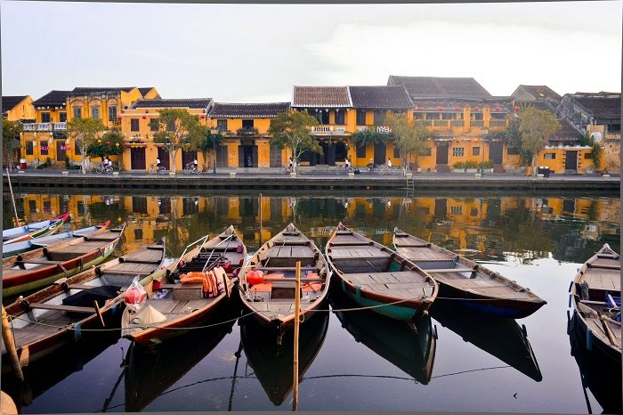
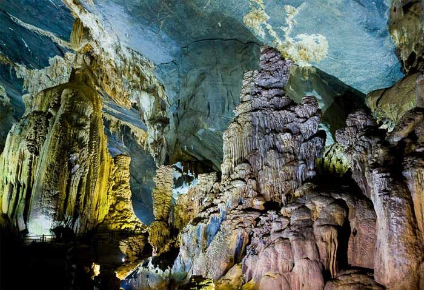
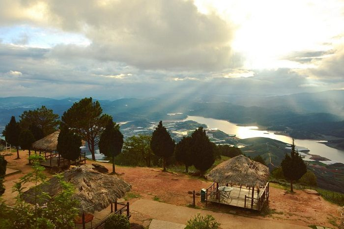
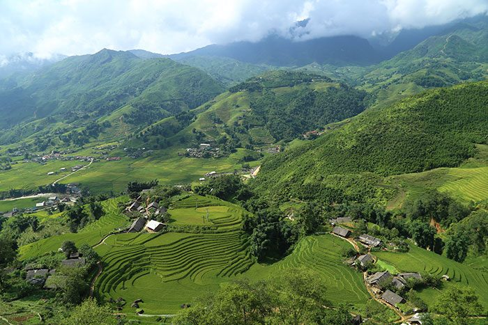
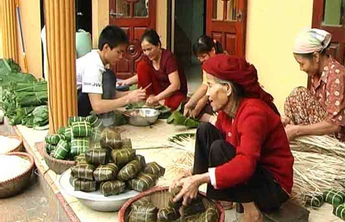
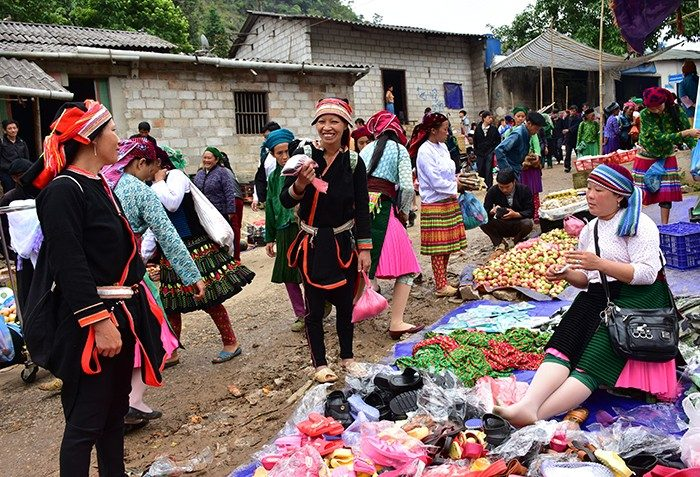

Nature
Col de Ma Pi Leng
Ha Giang · Tuyên Quang · NordCol d'une vingtaine de kilomètres entre Dong Van et Meo Vac, taillé à flanc de falaise vers 1 500 m d'altitude, au-dessus du canyon de Tu San et de la rivière Nho Que.
Que voir au Vietnam · Sélection d’une agence locale
Les 10 sites à ne pas manquer, puis tous nos coups de cœur du Nord au delta du Mékong sur une carte à filtrer. Pour chaque étape : la bonne saison, le nombre de jours et notre alternative plus tranquille.


Du Nord au Mékong · 8 régions
La réponse courte
Pour un premier voyage, nos dix incontournables du Vietnam sont Hanoï, la réserve de Vân Long, la baie de Bái Tử Long et Hà Giang au Nord ; Huế, Hội An et les grottes de Phong Nha au Centre ; Hô Chi Minh-Ville, le delta du Mékong et l’île de Phú Quốc au Sud. Comptez trois semaines pour tous les voir, deux semaines en choisissant deux régions.

La capitale millénaire : vieux quartier, temple de la Littérature et cuisine de rue.
La plus grande zone humide du delta du fleuve Rouge : barque silencieuse entre les pitons, oiseaux et langurs de Delacour.
Citadelle, tombeaux royaux et pagodes de l’ancienne capitale impériale des Nguyễn.
Une mégapole pleine d’énergie : marchés, Chợ Lớn, architecture coloniale et rooftops.

Le plateau de Đồng Văn, le col de Mã Pí Lèng et les villages hmong, tout au nord du pays.
Le prolongement nord-est de la baie d’Hạ Long : les mêmes îlots calcaires, des villages flottants et peu de bateaux.

Grottes géantes et rivières souterraines dans une jungle karstique classée par l’UNESCO.
Canaux, vergers et marchés flottants, à explorer en barque et à vélo.
Vieille ville UNESCO aux lanternes, campagne à vélo et plage d’An Bàng.
Plages, poivrières et fruits de mer pour finir le voyage en douceur.
Faites glisser pour voir les 10
Incontournables Vietnam : le top 10 détaillé, site par site Lire l’article →Carte interactive
Filtrez par région ou par envie, puis touchez un point pour ouvrir sa fiche : le guide complet, les circuits qui y passent et l’itinéraire sur Google Maps.
Col de Ma Pi Leng
Ha Giang · Tuyên Quang · NordCol d'une vingtaine de kilomètres entre Dong Van et Meo Vac, taillé à flanc de falaise vers 1 500 m d'altitude, au-dessus du canyon de Tu San et de la rivière Nho Que.

Chutes de Ban Gioc
Cao Bang · Cao Bằng · NordSur la frontière sino-vietnamienne, la rivière Quay Son dévale en plusieurs paliers sur environ 300 m de large, l'une des plus vastes cascades d'Asie. Radeau en bambou au pied.
Village de Ha Thanh
Ha Giang · Tuyên Quang · NordVillage tày aux maisons sur pilotis, entre rizières et montagnes, à quelques kilomètres de la ville de Ha Giang. Homestays accueillants et jolie première balade à pied.

Village de Tha
Ha Giang · Tuyên Quang · NordL'un des meilleurs villages de l'ethnie Tày à Hà Giang

Lac Ba Be
Ba Be · Thái Nguyên · NordPlus grand lac naturel du Vietnam, à 145 m d'altitude dans le parc national de Ba Be : trois bras d'eau entre falaises calcaires et forêts, en bateau ou en kayak.

Marché Dong Xuan
Hanoi · Hà Nội · NordLe plus grand marché couvert de Hanoï, au cœur du vieux quartier : tissus, épices, vaisselle et stands de street food.

Cité impériale de Thang Long
Hanoi · Hà Nội · NordSiège du pouvoir royal depuis 1010, la citadelle classée par l'UNESCO dévoile la porte Doan Mon, l'esplanade du palais Kinh Thien et des bunkers de la guerre du Vietnam.

Vieux quartier de Hanoï
Hanoi · Hà Nội · NordDédale de rues aux noms de métiers (Hang Bac, Hang Ma…) entre le lac Hoan Kiem et le fleuve Rouge : maisons-tubes, temples, marchés et cuisine de rue à chaque coin.

Lac Hoan Kiem
Hanoi · Hà Nội · NordLac du cœur de Hanoï, lié à la légende de Lê Lợi rendant son épée magique à la Tortue d'or. Les soirs de week-end, ses rives deviennent piétonnes et très animées.

Temple de la Littérature
Hanoi · Hà Nội · NordFondé en 1070 et dédié à Confucius, il abrita dès 1076 la première université du pays. Cours, pavillons et 82 stèles de docteurs sur tortues, inscrites à la Mémoire du monde.

Baie d'Halong
Ha Long · Quảng Ninh · NordPrès de 2 000 îles et pitons calcaires surgis du golfe du Tonkin, inscrits à l'UNESCO depuis 1994 : croisière en jonque, grottes et kayak entre les falaises.

Baie de Lan Ha
Lan Ha · Hải Phòng · NordAu sud-est de l'île de Cat Ba, quelque 400 îlots calcaires, plages isolées et lagons. Moins fréquentée qu'Halong, elle est inscrite au site UNESCO depuis 2023.

Pagode des Parfums
Hanoi · Hà Nội · NordLieu de pèlerinage majeur du Nord : on remonte en barque le ruisseau Yen entre les pitons calcaires, puis on grimpe ou prend le téléphérique jusqu'à la grotte Huong Tich.
Pagode Tam Chuc
Ha Nam · Ninh Bình · NordImmense complexe bouddhique au bord du lac Tam Chuc, adossé aux monts That Tinh : jardin de piliers de sutras, salles géantes et bateaux sur le lac.

Temples des Tran (Nam Dinh)
Nam Dinh · Ninh Bình · NordTrio de temples (Thien Truong, Co Trach, Trung Hoa) dédiés aux rois Tran et à Tran Hung Dao ; célèbre cérémonie d'ouverture du sceau au 1er mois lunaire.

Parc national de Cuc Phuong
Ninh Binh · Ninh Bình · NordPremier parc national du Vietnam (1962) : forêt primaire sur karst, randonnées, arbres millénaires, grotte préhistorique et centre de sauvegarde des primates.

Pagode Bai Dinh
Ninh Binh · Ninh Bình · NordImmense complexe bouddhique : galerie de 500 statues d'arhats, cloche géante et tour-stupa, à côté de l'ancienne pagode nichée dans les grottes du mont.

Complexe paysager de Trang An
Ninh Binh · Ninh Bình · NordSite Unesco depuis 2014 : 2 à 3 h de barque entre pitons karstiques, rizières inondées et grottes traversantes, ponctuées de petits temples isolés.

Grotte de la Danse (Hang Mua)
Ninh Binh · Ninh Bình · NordEnviron 500 marches jusqu'au sommet du mont Ngoa Long, gardé par un dragon de pierre : vue panoramique sur les rizières de Tam Coc et la rivière Ngo Dong.

Temple de Thai Vi
Ninh Binh · Ninh Bình · NordTemple en pierre du XIIIe siècle dédié aux rois Tran, niché entre rizières et pitons près de Tam Coc ; paisible et peu fréquenté, fête au 1er mois lunaire.

Tam Coc
Ninh Binh · Ninh Bình · NordLes « trois grottes » : barque sur la rivière Ngo Dong entre rizières et pitons karstiques, souvent ramée avec les pieds. Fait partie du site Unesco de Trang An.

Citadelle impériale de Hué
Hue · Huế · CentreCapitale des Nguyen bâtie à partir de 1804 : remparts, douves, palais et temples sur la rive nord de la rivière des Parfums. Inscrite à l'Unesco en 1993.

Vieille ville de Hoi An
Hoi An · Đà Nẵng · CentreAncien port marchand des XVe-XIXe siècles : maisons à boutiques, salles d'assemblée chinoises et lanternes. Inscrite à l'Unesco en 1999.

Palais du roi Hmong (palais des Vuong)
Ha Giang · Tuyên Quang · NordRésidence de la famille Vuong, chefs hmong du plateau au début du XXe siècle : bâtisse de pierre, de bois sculpté et de tuiles mêlant styles chinois et hmong, dans la vallée de Sa Phin.
Musée de la Route du Bonheur
Ha Giang · Tuyên Quang · NordEspace d'exposition consacré à la route du Bonheur, taillée à flanc de falaise de 1959 à 1965 par des milliers de jeunes volontaires entre Ha Giang et Meo Vac.
Sentier du ciel de Ma Pi Leng
Ha Giang · Tuyên Quang · NordÉtroit sentier creusé dans la falaise sous le col de Ma Pi Leng, à parcourir à pied pour des vues vertigineuses sur le canyon de Tu San. Accès parfois restreint.

Géoparc mondial du plateau karstique de Dong Van
Ha Giang · Tuyên Quang · NordGéoparc mondial UNESCO depuis 2010, ce plateau calcaire perché au-dessus de 1 000 m s'étend sur quatre anciens districts : pics karstiques, cultures en terrasses, marchés hmong.

Rivière Nho Que
Ha Giang · Tuyên Quang · NordRivière aux eaux vert jade qui serpente au fond du canyon de Tu San, l'un des plus profonds d'Asie du Sud-Est. À admirer depuis Ma Pi Leng ou en bateau, tout en bas.
Porte du Ciel de Quan Ba
Ha Giang · Tuyên Quang · NordCol à environ 1 500 m d'altitude dominant la vallée de Quan Ba, premier grand panorama de la boucle de Ha Giang, avec vue sur les deux montagnes jumelles des Fées.

Coopérative de tissage de lin de Lung Tam
Ha Giang · Tuyên Quang · NordCoopérative de femmes hmong qui perpétuent le travail du lin : filage, tissage au métier, teinture à l'indigo et motifs à la cire d'abeille. Démonstrations sur place.

Village de l'ethnie Bố Y de Quyet Tien
Ha Giang · Tuyên Quang · NordLes Bo Y, l'une des plus petites ethnies du Vietnam (environ 3 000 personnes), vivent ici dans des maisons en terre. Rencontre rare avec leurs costumes et traditions.
Grotte de Pac Bo
Cao Bang · Cao Bằng · NordGrotte près de la frontière chinoise où Hô Chi Minh s'installa en 1941, à son retour après trente ans d'exil. Alentour : ruisseau Lénine et montagne Karl Marx.
Col de Khau Coc Cha
Bao Lac · Cao Bằng · NordCol célèbre pour ses quatorze virages en épingle serrés les uns sur les autres, près de Bao Lac ; spectaculaire vu d'en haut, surtout à la saison du riz mûr.
Col de Na Tenh
Cao Bang · Cao Bằng · NordCol de montagne de la province de Cao Bang, sur la route de Pac Bo, offrant de larges vues sur les pitons karstiques et les vallées cultivées en contrebas.
Vallée de Xuan Truong
Cao Bang · Cao Bằng · NordVallée d'altitude de Bao Lac, réputée pour ses cerisiers sauvages en fleurs en début d'hiver, entre villages dao et hmong, champs en terrasses et pitons calcaires.

Village lolo noir de Khuoi Khon
Bao Lac · Cao Bằng · NordVillage lolo noir aux maisons de bois sur pilotis, perché dans les montagnes de Bao Lac. Costumes aux broderies multicolores et nuit chez l'habitant possible.
Village de Cuong Thinh
Ha Giang · Tuyên Quang · NordVillage tày paisible de la région de Ha Giang, aux maisons de bois sur pilotis entourées de rizières ; balade à pied et échanges avec les familles du hameau.
Village de Tan Tien
Ha Giang · Tuyên Quang · NordHameau tày des environs de Ha Giang : maisons sur pilotis, rizières et potagers. Une halte à pied pour observer la vie agricole des Tày, à l'écart des grands axes.

Grotte de Nguom Ngao
Cao Bang · Cao Bằng · NordGrotte calcaire à 3 km de Ban Gioc, aux galeries longues de plus de 2 km ornées de stalactites et stalagmites ; son nom tày signifie « grotte du tigre ».

Village d'encens de Phia Thap
Cao Bang · Cao Bằng · NordVillage nung an où les familles fabriquent l'encens à la main, avec des écorces et bois aromatiques ; les bâtonnets rouges sèchent en éventail au soleil.

Village de forgerons de Phuc Sen
Cao Bang · Cao Bằng · NordVillage nung an réputé dans tout le Nord pour ses forgerons : couteaux, machettes et outils agricoles martelés à la main dans de petites forges familiales.
Rivière Nang
Ba Be · Thái Nguyên · NordRivière bordée de falaises et de forêts près du lac Ba Be ; on la remonte en bateau à travers la grotte de Puong jusqu'aux rapides de Dau Dang.
Grotte de Puong
Ba Be · Thái Nguyên · NordGrotte d'environ 300 m de long et 30 m de haut que la rivière Nang traverse de part en part ; on y passe en bateau sous les concrétions et les chauves-souris.
Cascade de Dau Dang
Ba Be · Thái Nguyên · NordSuccession de rapides et de chutes où la rivière Nang se brise entre les rochers, en lisière du parc national de Ba Be ; accès en bateau depuis le lac.

Village de Pac Ngoi
Ba Be · Thái Nguyên · NordVillage tày aux maisons sur pilotis au bord du lac Ba Be, base idéale pour dormir chez l'habitant et partir en bateau ou à vélo autour du lac.
Village dao de Ham Yen
Tuyen Quang · Tuyên Quang · NordHameau dao des collines de Ham Yen, pays des oranges sur la route de Ha Giang : costumes brodés, maisons de bois et rencontre avec les habitants, loin des circuits classiques.
Temple Soc
Hanoi · Hà Nội · NordSur le mont Soc, le sanctuaire du héros légendaire Thanh Giong, cœur de la fête de Giong inscrite à l'UNESCO.
Maison communale de Tay Dang
Hanoi · Hà Nội · NordBâtie au XVIe siècle sous les Mac, la maison communale de Tay Dang est l'une des plus anciennes du Nord, célèbre pour ses sculptures sur bois de scènes de la vie rurale.

Pagode Mia
Hanoi · Hà Nội · NordAu cœur du vieux village de Duong Lam, la pagode Mia, restaurée au XVIIe siècle sous le patronage d'une concubine des seigneurs Trinh, abrite près de 300 statues.

Village ancien de Duong Lam
Hanoi · Hà Nội · NordÀ 45 km de Hanoï, ce village aux maisons de latérite, portes anciennes et maison communale séculaire est le berceau de deux rois, Phung Hung et Ngo Quyen.
Lac de Suoi Hai
Hanoi · Hà Nội · NordLac de barrage au pied du mont Ba Vi, Suoi Hai mêle eaux calmes, îlots couverts de pins et rives sauvages, idéal pour une balade en barque loin de la foule.
Citadelle de Son Tay
Hanoi · Hà Nội · NordÉdifiée en 1822 sous Minh Mang, la citadelle de Son Tay garde ses remparts en latérite, ses douves et sa tour de guet, à quelques kilomètres du village de Duong Lam.
Temple Va
Hanoi · Hà Nội · NordEntouré d'une forêt de vieux bois de fer, le temple Va, à Son Tay, est dédié à Son Tinh, génie du mont Ba Vi ; ses fêtes attirent les foules au printemps et en automne.
Citadelle de Co Loa
Hanoi · Hà Nội · NordCapitale du royaume Au Lac au IIIe siècle av. J.-C., la citadelle en spirale du roi An Duong Vuong garde des remparts de terre, des temples et la légende de l'arbalète magique.
Maison communale de Chem
Hanoi · Hà Nội · NordAu bord du fleuve Rouge, cette maison communale vénère Ly Ong Trong, géant légendaire. Sa charpente sculptée des XVIIIe-XIXe siècles est d'une rare finesse.
Temple de Hat Mon
Hanoi · Hà Nội · NordAu bord du fleuve Rouge à Phuc Tho, ce temple honore les sœurs Trung, qui y auraient prêté serment en l'an 40 avant de se soulever contre les Han.
Khoang Xanh - Suoi Tien
Hanoi · Hà Nội · NordAu pied du massif de Ba Vi, ce parc écotouristique combine ruisseaux de montagne, petites cascades, piscines naturelles et jeux d'eau, apprécié des familles en été.
Champs de fleurs de Bai Da (fleuve Rouge)
Hanoi · Hà Nội · NordSur une berge alluviale du fleuve Rouge, sous le pont Nhat Tan, ce parc fleuri change de décor selon la saison : cosmos, marguerites, tournesols, prisés des photographes.
Village des pêchers de Nhat Tan
Hanoi · Hà Nội · NordAvant le Têt, les vergers de Nhat Tan, près du fleuve Rouge, se couvrent de fleurs de pêcher roses, que les Hanoïens viennent choisir pour décorer leur maison.

Marché aux fleurs de Quang Ba
Hanoi · Hà Nội · NordPlus grand marché de gros aux fleurs du Nord, il s'anime en pleine nuit : roses, lys et pivoines arrivent par camions et repartent à l'aube vers toute la ville.
Temple Thuong du mont Ba Vi
Hanoi · Hà Nội · NordAu sommet du mont Tan Vien, ce temple honore Son Tinh, génie de la montagne et l'un des quatre Immortels du Vietnam ; on y monte par un long escalier dans la forêt.
Pagode Kim Lien
Hanoi · Hà Nội · NordAu bord du lac de l'Ouest, dans l'ancien village de Nghi Tam, cette pagode liée à la princesse Tu Hoa se distingue par son portail aux toits superposés finement ouvragés.

Lac de l'Ouest
Hanoi · Hà Nội · NordPlus grand lac de Hanoï, bordé de pagodes, de cafés et de villas. Ses 17 km de rives se parcourent à vélo et offrent les plus beaux couchers de soleil de la ville.
Lac de Dong Mo
Hanoi · Hà Nội · NordAu pied du massif de Ba Vi, ce vaste lac de barrage parsemé d'îlots est bordé de collines, de golfs et de complexes de loisirs prisés des Hanoïens le week-end.
Temple Phu Tay Ho
Hanoi · Hà Nội · NordSur une presqu'île du lac de l'Ouest, ce temple dédié à la Déesse Mère Lieu Hanh attire les fidèles les 1er et 15e jours lunaires ; on y goûte les beignets de crevettes.
Temple de Phu Dong
Hanoi · Hà Nội · NordDans le village natal du héros Saint Giong, ce temple accueille au 4e mois lunaire la fête de Giong, classée au patrimoine immatériel de l'UNESCO en 2010.

Pagode Tran Quoc
Hanoi · Hà Nội · NordDoyenne des pagodes de Hanoï, fondée au VIe siècle, elle occupe un îlot du lac de l'Ouest relié par une chaussée. Son stupa rouge de onze étages se reflète dans l'eau.
Lac Truc Bach
Hanoi · Hà Nội · NordSéparé du lac de l'Ouest par la digue Thanh Nien, ce petit lac bordé de terrasses tient son nom d'un ancien palais des Trinh où l'on tissait la soie.
Village des sculpteurs de statues de Son Dong
Hanoi · Hà Nội · NordÀ Hoai Duc, les artisans de Son Dong taillent depuis des générations statues bouddhiques et objets de culte en bois, ensuite laqués rouge et dorés à la feuille.

Pont Long Bien
Hanoi · Hà Nội · NordPont métallique de 1,7 km achevé en 1902 et bombardé pendant la guerre. Trains, scooters et piétons s'y croisent au-dessus du fleuve Rouge et de ses bancs cultivés.

Temple Quan Thanh
Hanoi · Hà Nội · NordGardien nord de Thang Long, ce temple fondé sous les Ly vénère Tran Vu. Sa statue de bronze de près de 4 m, fondue en 1677, est un chef-d'œuvre de la fonte vietnamienne.
Village culturel et touristique des ethnies du Vietnam
Hanoi · Hà Nội · NordPrès du lac de Dong Mo, ce vaste parc reconstitue maisons et villages des ethnies du Vietnam ; des communautés y vivent et animent fêtes et démonstrations.

Marché de Long Bien
Hanoi · Hà Nội · NordAu pied du pont Long Bien, ce marché de gros s'anime surtout la nuit : porteurs, camions et motos chargés de fruits et légumes s'y croisent jusqu'à l'aube.
Porte Nord de la citadelle (Cua Bac)
Hanoi · Hà Nội · NordSeule porte conservée de la citadelle des Nguyen, bâtie en 1805. Sa façade porte encore les impacts des boulets français de 1882 ; un autel y honore Hoang Dieu.
Jardin botanique de Hanoï
Hanoi · Hà Nội · NordAménagé par les Français à la fin du XIXe siècle derrière le palais présidentiel, ce parc arboré avec lac et colline offre aux Hanoïens une bouffée de verdure.
Château d'eau de Hang Dau
Hanoi · Hà Nội · NordConstruit par les Français en 1894, ce château d'eau circulaire en brique alimentait le vieux quartier. Fermé au public, il se découvre de l'extérieur.

Musée d'Ethnographie du Vietnam
Hanoi · Hà Nội · NordVêtements, outils et rites des 54 ethnies du pays, puis un jardin de maisons grandeur nature (maison commune bahnar, tombeau jaraï, maison longue édé) à parcourir.

Palais présidentiel
Hanoi · Hà Nội · NordAncien palais du gouverneur général de l'Indochine (1906), façade jaune de style Beaux-Arts. On n'en visite que le parc, avec l'étang aux carpes et la maison de l'Oncle Hô.

Maison sur pilotis de Hô Chi Minh
Hanoi · Hà Nội · NordModeste maison en bois sur pilotis où Hô Chi Minh vécut de 1958 à 1969, au bord d'un étang dans le parc du palais présidentiel ; bureau et chambre restés en l'état.
Épave du B-52 du lac Huu Tiep
Hanoi · Hà Nội · NordDans une ruelle du quartier Ngoc Ha, la carcasse d'un B-52 abattu en décembre 1972 émerge toujours d'une petite mare, au milieu des maisons d'habitants.
Site archéologique du 18 Hoang Dieu
Hanoi · Hà Nội · NordFace à la citadelle, ces fouilles débutées en 2002 révèlent fondations, puits et céramiques superposés sur plus de mille ans, des Dai La aux Nguyen.
Porte Quan Chuong
Hanoi · Hà Nội · NordSeule porte subsistante de l'ancienne enceinte de Hanoï, rebâtie en 1817. Ses trois arches ouvrent sur les ruelles du vieux quartier, côté fleuve Rouge.

Place Ba Dinh
Hanoi · Hà Nội · NordVaste esplanade où Ho Chi Minh proclama l'indépendance le 2 septembre 1945. Face au mausolée, la levée et la descente des couleurs y attirent chaque jour les foules.
Mausolée de Hô Chi Minh
Hanoi · Hà Nội · NordInauguré en 1975 sur la place Ba Dinh, où fut proclamée l'indépendance en 1945, il abrite le corps embaumé de Hô Chi Minh. Tenue correcte et silence exigés.

Rue du train de Hanoï
Hanoi · Hà Nội · NordRuelle où le train passe à quelques centimètres des maisons ; l'accès est encadré par les autorités, renseignez-vous avant d'y aller.

Rue Hang Ma
Hanoi · Hà Nội · NordRue du vieux quartier vouée aux objets votifs en papier, lanternes et décorations : elle s'illumine pour la fête de la mi-automne puis se pare de rouge avant le Têt.
Rue des fresques de Phung Hung
Hanoi · Hà Nội · NordSous les arches en brique du viaduc ferroviaire de la rue Phung Hung, des fresques peintes en 2017 avec des artistes coréens racontent la vie du vieux Hanoï.

Temple Bach Ma
Hanoi · Hà Nội · NordPlus ancien temple du vieux quartier, fondé au XIe siècle. Selon la légende, un cheval blanc y aurait guidé le roi Ly Thai To pour tracer les remparts de Thang Long.

Pagode au Pilier unique
Hanoi · Hà Nội · NordPetit sanctuaire en bois évoquant un lotus posé sur un pilier unique au milieu d'un bassin, fondé en 1049 sous les Ly. Détruit en 1954, il fut reconstruit en 1955.

Musée de la Victoire sur les B-52
Hanoi · Hà Nội · NordConsacré aux « douze jours et nuits » de décembre 1972, ce musée de la rue Doi Can expose dans sa cour des débris de B-52, des missiles SAM et un MiG-21.
Rue de la bière Ta Hien
Hanoi · Hà Nội · NordRue du vieux quartier où l'on boit la bia hoi sur des tabourets en plastique. Le soir, voyageurs et Hanoïens s'y pressent jusque tard dans une ambiance festive.
Porte Doan Mon
Hanoi · Hà Nội · NordPorte sud de la Cité interdite, bâtie sous les Lê au XVe siècle. Ses cinq arches et son plancher de verre révèlent d'anciennes fondations mises au jour par les fouilles.
Musée Hô Chi Minh
Hanoi · Hà Nội · NordPrès du mausolée, un musée à l'architecture étonnante retraçant la vie de l'Oncle Hô et l'histoire du XXe siècle.

Maison ancienne du 87 Ma May
Hanoi · Hà Nội · NordMaison-tube de marchand de la fin du XIXe siècle, restaurée avec l'aide de Toulouse. Cours intérieures, autel et mobilier racontent la vie du vieux quartier.
Maison du 48 rue Hang Ngang
Hanoi · Hà Nội · NordDans cette maison de marchand du vieux quartier, Ho Chi Minh rédigea en août 1945 la Déclaration d'indépendance. La pièce de l'étage est conservée telle quelle.
Maison communale de Kim Ngan
Hanoi · Hà Nội · NordRue Hang Bac, cette maison communale dédiée aux fondateurs de la corporation des orfèvres et bijoutiers conserve une belle charpente sculptée au cœur du vieux quartier.
Marché de nuit du vieux quartier
Hanoi · Hà Nội · NordDu vendredi au dimanche soir, la rue Hang Dao devient piétonne et se remplit d'étals jusqu'au marché Dong Xuan.

Pagode Tay Phuong
Hanoi · Hà Nội · NordPagode perchée sur une colline à 40 km de Hanoï, célèbre pour ses statues d'arhats en bois laqué parmi les plus belles du pays.
Tour du drapeau de Hanoï
Hanoi · Hà Nội · NordÉrigée en 1812 sous les Nguyen, cette tour octogonale de plus de 33 m survécut au démantèlement de la citadelle. Le drapeau national flotte à son sommet.
Observatoire de la Lotte Center
Hanoi · Hà Nội · NordAu 65e étage de la tour Lotte, à plus de 260 m, l'observatoire offre une vue à 360° sur Hanoï et un plancher de verre suspendu dans le vide.

Théâtre de marionnettes sur l'eau Thang Long
Hanoi · Hà Nội · NordAu bord du lac Hoan Kiem, spectacles de marionnettes sur l'eau, art né dans les rizières du delta : scènes de vie rurale et légendes, avec orchestre traditionnel en direct.

Musée des Beaux-Arts du Vietnam
Hanoi · Hà Nội · NordInstallé dans une villa coloniale face au Temple de la Littérature : laques, soies, sculptures et art populaire vietnamien.

Pont The Huc
Hanoi · Hà Nội · NordPont de bois laqué rouge construit au XIXe siècle, il relie la rive au temple Ngoc Son. Son nom évoque « le lieu où se pose la lumière du matin ».
Temple Ngoc Son
Hanoi · Hà Nội · NordSur l'île de Jade, accessible par le pont rouge The Huc, ce temple honore le général Tran Hung Dao et le génie des lettres. Il abrite une tortue géante naturalisée.
Tour du Pinceau
Hanoi · Hà Nội · NordÉrigée en 1865 par le lettré Nguyen Van Sieu à l'entrée du temple Ngoc Son, cette tour en forme de pinceau porte l'inscription « écrire sur le ciel bleu ».

Village des éventails de Chang Son
Hanoi · Hà Nội · NordPrès de la pagode Tay Phuong, Chang Son fabrique depuis des siècles des éventails en bambou et papier peints à la main ; le village est aussi connu pour ses menuisiers.
Temple Voi Phuc
Hanoi · Hà Nội · NordGardien ouest de Thang Long, ce temple fondé au XIe siècle honore le prince Linh Lang. Deux éléphants agenouillés en gardent l'entrée, près du parc Thu Le.

Rues piétonnes du lac Hoan Kiem
Hanoi · Hà Nội · NordLe week-end, les abords du lac Hoan Kiem sont fermés aux véhicules : familles, danseurs, musiciens et jeux traditionnels investissent la chaussée jusque tard le soir.
Temple taoïste de Bich Cau
Hanoi · Hà Nội · NordRue Cat Linh, ce rare temple taoïste est dédié au lettré Tu Uyen, héros d'une légende où il épouse une fée sortie d'un tableau ; architecture paisible et discrète.
Cathédrale Saint-Joseph
Hanoi · Hà Nội · NordInaugurée en 1886 sur le site de l'ancienne pagode Bao Thien, cette cathédrale néogothique aux deux tours carrées évoque Notre-Dame de Paris. Messes très suivies.
Tour de la Tortue
Hanoi · Hà Nội · NordConstruite en 1886 sur un îlot du lac Hoan Kiem, cette petite tour mêle styles vietnamien et colonial. Inaccessible, elle s'admire des rives, illuminée le soir.
Ancienne Banque de l'Indochine
Hanoi · Hà Nội · NordAncien siège de la Banque de l'Indochine, achevé vers 1930 par l'architecte Georges-André Trouvé, ce bâtiment Art déco abrite la Banque d'État. Visible de l'extérieur.
Bunker de l'hôtel Métropole
Hanoi · Hà Nội · NordRedécouvert en 2011 sous l'hôtel Métropole de 1901, cet abri protégea clients et personnel des bombardements américains, dont la chanteuse Joan Baez en 1972.

Prison de Hoa Lo
Hanoi · Hà Nội · NordBâtie par les Français en 1896, la « Maison centrale » enferma des révolutionnaires vietnamiens puis des pilotes américains surnommés « Hanoi Hilton ». Mémorial poignant.

Quartier français de Hanoï
Hanoi · Hà Nội · NordAu sud du lac Hoan Kiem, larges avenues ombragées bordées de villas et d'édifices coloniaux : Opéra (1911), hôtel Métropole, ancienne résidence supérieure… à explorer à pied.
Pagode Quan Su
Hanoi · Hà Nội · NordSiège de l'Église bouddhique du Vietnam, une pagode très fréquentée par les Hanoïens, surtout les 1er et 15 du mois lunaire.

Musée des Femmes vietnamiennes
Hanoi · Hà Nội · NordUn musée vivant et bien scénographié sur le rôle des femmes dans la famille, l'histoire et la mode au Vietnam.
Rue des livres de Hanoï (rue 19 Thang 12)
Hanoi · Hà Nội · NordOuverte en 2017 rue 19 Thang 12, à deux pas du lac Hoan Kiem, cette rue piétonne alignant librairies et cafés invite à feuilleter des livres à l'ombre des arbres.

Musée national d'Histoire du Vietnam
Hanoi · Hà Nội · NordDans un superbe bâtiment indochinois, la grande traversée de l'histoire du pays, de la préhistoire aux Nguyen.

Opéra de Hanoï
Hanoi · Hà Nội · NordInauguré en 1911 et inspiré du Palais Garnier, ce théâtre néoclassique domine la place de la Révolution d'Août. Concerts, ballets et opéras y sont donnés toute l'année.
Pagode Lang
Hanoi · Hà Nội · NordFondée au XIIe siècle sous les Ly, cette pagode honore le moine Tu Dao Hanh. Une longue allée pavée mène à ses sanctuaires, au calme loin de l'agitation.

Pagode Thay
Hanoi · Hà Nội · NordAu pied du mont Sai Son, la pagode du moine Tu Dao Hanh se mire dans un étang où trône un pavillon de marionnettes sur l'eau. Ponts couverts et grottes à explorer.

Parc national de Ba Vi
Hanoi · Hà Nội · NordÀ 60 km à l'ouest de Hanoï, le massif de Ba Vi offre forêts, sentiers, vestiges de l'époque coloniale et, au sommet, des temples dédiés au génie de la montagne.
Temple des Deux Sœurs Trung
Hanoi · Hà Nội · NordTemple discret dédié aux sœurs Trung, héroïnes de la résistance contre les Han au Ier siècle.

Musée d'histoire militaire du Vietnam
Hanoi · Hà Nội · NordOuvert fin 2024 sur l'avenue Thang Long, ce vaste musée retrace l'histoire militaire du pays, des guerres anciennes à 1975, avec chars, avions et canons exposés en plein air.
Musée de Hanoï
Hanoi · Hà Nội · NordGrand bâtiment en pyramide inversée dans le nouveau Hanoï, consacré aux mille ans d'histoire de la capitale.
Musée de la Défense aérienne et de l'Armée de l'air
Hanoi · Hà Nội · NordRue Truong Chinh, ce musée raconte la guerre aérienne au Vietnam : MiG-21, hélicoptères et batteries antiaériennes alignés en plein air, archives et maquettes à l'intérieur.

Village de la feuille d'or de Kieu Ky
Hanoi · Hà Nội · NordSeul village du pays à battre la feuille d'or et d'argent à la main, Kieu Ky fournit pagodes et ateliers de laque ; il est aussi réputé pour ses articles en cuir.

Village de la soie de Van Phuc
Hanoi · Hà Nội · NordTissée ici depuis plus de mille ans, la soie de Van Phuc, à Ha Dong, se découvre en flânant entre métiers à tisser, échoppes de tissus et vieux puits du village.

Village de céramique de Bat Trang
Hanoi · Hà Nội · NordSur la rive du fleuve Rouge, ce village de potiers actif depuis plus de cinq siècles invite à tourner son propre bol et à flâner dans son marché de céramique.
Pagode Tram Gian
Hanoi · Hà Nội · NordPerchée sur une colline boisée, cette pagode fondée au XIIe siècle doit son nom à ses « cent travées ». Elle conserve de nombreuses statues et des cloches anciennes.
Village de vannerie de Phu Vinh
Hanoi · Hà Nội · NordBerceau réputé du rotin et du bambou tressés, Phu Vinh (Chuong My) produit paniers, vases et figurines d'une grande finesse, souvent tressés à la main dans les cours des maisons.

Baie de Bai Tu Long
Bai Tu Long · Quảng Ninh · NordProlongement nord-est de la baie d'Ha Long, Bai Tu Long aligne pitons calcaires, îles boisées et villages flottants, avec bien moins de bateaux qu'à Ha Long.

Village de la laque de Ha Thai
Hanoi · Hà Nội · NordÀ Thuong Tin, les ateliers de Ha Thai superposent couches de laque, coquille d'œuf et feuille d'or, poncées des dizaines de fois pour créer tableaux et objets laqués.
Îlots des Coqs de combat
Ha Long · Quảng Ninh · NordDeux rochers d'une dizaine de mètres face à face, emblème de la baie d'Halong figurant sur le billet de 200 000 dongs ; la légende y voit deux coqs ou un couple.
Grotte de Thien Canh Son
Bai Tu Long · Quảng Ninh · NordPetite grotte nichée dans un îlot de Bai Tu Long, accessible par un escalier : stalactites et concrétions éclairées, halte classique des croisières de la baie.

Village de broderie de Quat Dong
Hanoi · Hà Nội · NordQuat Dong vénère Le Cong Hanh, mandarin du XVIIe siècle qui aurait rapporté la broderie de Chine : les brodeuses y réalisent encore tableaux et costumes au fil de soie.

Village flottant de Vung Vieng
Bai Tu Long · Quảng Ninh · NordVillage de pêcheurs flottant de Bai Tu Long : maisons sur radeaux, fermes perlières et balade en barque à rames menée par les habitants entre les pitons.

Pagode Dau
Hanoi · Hà Nội · NordParmi les plus anciennes pagodes du delta, la pagode Dau conserve les corps laqués de deux moines du XVIIe siècle, Vu Khac Minh et Vu Khac Truong, en posture de méditation.

Village des chapeaux coniques de Chuong
Hanoi · Hà Nội · NordDepuis des siècles, les artisans de Chuong cousent à la main les chapeaux coniques en feuilles de latanier. Le marché aux chapeaux se tient selon le calendrier lunaire.
Village des chapeaux coniques de Tri Le
Hanoi · Hà Nội · NordVillage rural du sud de Hanoï où l'on fabrique encore à la main des chapeaux coniques, de la préparation des feuilles à la couture des bords.
Grotte-hôpital de Cat Ba
Cat Ba · Hải Phòng · NordHôpital militaire secret aménagé en 1963-1965 dans une grotte de Cat Ba : trois niveaux de salles en béton où l'on soignait les blessés pendant la guerre américaine.
Village de vannerie de Phu Tuc
Hanoi · Hà Nội · NordDans ce village de Phu Xuyen, on tresse fibres de fougère cỏ tế, jacinthe d'eau et bambou en paniers, plateaux et boîtes, en grande partie destinés à l'export.
Village de la chaussure en cuir de Phu Yen
Hanoi · Hà Nội · NordAu sud de Hanoï, ce village s'est spécialisé dans la fabrication de chaussures en cuir : ateliers familiaux de découpe, couture et montage à découvrir.
Village de la soie de Nha Xa
Ha Nam · Ninh Bình · NordVillage de tisserands de soie sur la rive du fleuve Rouge : métiers à tisser en activité, teinture traditionnelle et quelques villas d'époque coloniale.
Village de vannerie de Ngoc Dong
Ha Nam · Ninh Bình · NordVillage de vannerie en rotin et bambou : paniers, meubles et objets décoratifs tressés à la main, en grande partie destinés à l'export.
Temple de Vu Dien (temple de Dame Vu)
Ha Nam · Ninh Bình · NordTemple dédié à Vu Thi Thiet, l'épouse fidèle de la légende de « la femme de Nam Xuong » ; ses toits superposés évoquent une fleur de lotus épanouie.

Village des galettes de riz de Cheu
Ha Nam · Ninh Bình · NordVillage où l'on fabrique les fines galettes de riz pour les nems : feuilles cuites à la vapeur puis séchées au soleil sur des claies de bambou.
Pagode Long Doi Son
Ha Nam · Ninh Bình · NordPagode de l'époque Ly au sommet du mont Doi, gardienne de la stèle Sung Thien Dien Linh (1121), trésor national ; vue sur la plaine du delta.
Village des tambours de Doi Tam
Ha Nam · Ninh Bình · NordVillage de facteurs de tambours traditionnels au pied du mont Doi : fûts en bois et peaux tendues à la main, pour pagodes, fêtes et théâtres.
Temple de Tran Thuong
Ha Nam · Ninh Bình · NordTemple dédié à Tran Hung Dao sur l'ancien grenier de l'armée Tran, au bord du fleuve Rouge ; distribution rituelle de riz la nuit du 14 du 1er mois lunaire.
Parc aquatique Sun World Ha Nam
Ha Nam · Ninh Bình · NordParc aquatique de la ville nouvelle Sun Urban City : toboggans, piscine à vagues et rivière lente ; spectacles d'eau en soirée l'été.
Musée provincial (antenne de Phu Ly)
Ha Nam · Ninh Bình · NordAntenne du musée provincial à Phu Ly : archéologie, art religieux et vie rurale de l'ancienne province de Ha Nam.
Village de broderie d'An Hoa (Thanh Ha)
Ha Nam · Ninh Bình · NordVillage de broderie et de dentelle actif depuis plus d'un siècle : nappes, tableaux et vêtements brodés main, ateliers ouverts aux visiteurs.
Village de l'alcool de riz de Voc
Ha Nam · Ninh Bình · NordVillage réputé pour son alcool de riz parfumé aux plantes médicinales, distillé de façon artisanale, l'une des spécialités de Binh Luc.
Temple de Bao Loc
Nam Dinh · Ninh Bình · NordTemple élevé sur la terre ancestrale de la dynastie Tran, dédié aux ancêtres Tran et à Tran Hung Dao, dont une grande statue de bronze domine l'esplanade.
Pagode Pho Minh
Nam Dinh · Ninh Bình · NordPagode de l'ancienne résidence royale Tran de Thien Truong, dominée par la tour Pho Minh (1305), 14 étages de brique et de pierre, rare vestige de l'époque.
Lac Vi Xuyen
Nam Dinh · Ninh Bình · NordLac et parc arborés au centre de Nam Dinh, rendez-vous des habitants pour la promenade du soir, près de la statue de Tran Hung Dao.
Marché Rong de Nam Dinh
Nam Dinh · Ninh Bình · NordGrand marché couvert de Nam Dinh, rue Tran Hung Dao : produits du delta, tissus, épices et étals de spécialités locales.
Vieux quartier de Nam Dinh
Nam Dinh · Ninh Bình · NordUne quarantaine de rues « Hang » (Hang Sat, Hang Dong, Hang Tien…) gardent des maisons-tubes anciennes et le souvenir des corporations marchandes.
Tour du drapeau de Nam Dinh
Nam Dinh · Ninh Bình · NordTour du drapeau de la citadelle de Nam Dinh, édifiée sous les Nguyen au XIXe siècle, principal vestige de la forteresse au cœur de la ville.
Musée du textile du Vietnam
Nam Dinh · Ninh Bình · NordInstallé dans l'ancienne usine textile de Nam Dinh, fondée à l'époque coloniale, ce musée retrace l'histoire de l'industrie textile vietnamienne.
Grande église de Nam Dinh
Nam Dinh · Ninh Bình · NordÉglise principale de la ville de Nam Dinh, aux clochers néo-gothiques, au cœur des anciens quartiers commerçants.
Musée de Nam Dinh
Nam Dinh · Ninh Bình · NordMusée de l'ancienne province de Nam Dinh : vestiges de l'époque Tran, céramiques, art religieux et histoire de la ville.
Village des bonsaïs de Vi Khe
Nam Dinh · Ninh Bình · NordVillage de jardiniers vieux de 700 ans au bord du fleuve Rouge, spécialisé dans les bonsaïs et plantes ornementales, très animé avant le Têt.

Réserve naturelle de Van Long
Ninh Binh · Ninh Bình · NordPlus vaste zone humide du delta du fleuve Rouge : promenade en barque de bambou entre pitons et roseaux, refuge du langur de Delacour, primate menacé.
Marché de Vieng
Nam Dinh · Ninh Bình · NordMarché du Nouvel An qui ne se tient qu'une nuit, du 7 au 8 du 1er mois lunaire : on y « achète la chance, vend la malchance », sans marchander.
Village de poterie de Gia Thuy
Ninh Binh · Ninh Bình · NordVillage de potiers de Nho Quan où l'on façonne jarres et poteries en terre cuite selon des gestes transmis de génération en génération.

Pagode-grotte de Dich Long
Ninh Binh · Ninh Bình · NordPagode accrochée au mont Dich Long, prolongée de trois grottes ornées de stalactites ; surnommée « troisième grotte sous le ciel du Sud ».
Sanctuaire de Phu Day
Nam Dinh · Ninh Bình · NordHaut lieu du culte des Déesses-Mères dédié à la Mère Lieu Hanh (Phu Tien Huong, Phu Van Cat, tombeau) ; grand pèlerinage et fête au 3e mois lunaire.
Arbre millénaire de Cuc Phuong
Ninh Binh · Ninh Bình · NordGéant de la forêt (Parashorea chinensis) d'environ 45 m, estimé à un millénaire, rejoint par un sentier de randonnée au cœur du parc.

Pagode Keo Hanh Thien
Nam Dinh · Ninh Bình · NordPagode fondée sous les Ly et dédiée au maître zen Duong Khong Lo, à l'entrée du village de Hanh Thien ; remarquable ensemble de charpentes anciennes.

Monastère cistercien de Chau Son
Ninh Binh · Ninh Bình · NordAbbaye cistercienne fondée à la fin des années 1930 au pied des collines de Nho Quan : église de brique et de pierre, cloître paisible, visites encadrées.
Pagode Dai Bi
Nam Dinh · Ninh Bình · NordPagode ancienne de Nam Giang liée au moine Nguyen Minh Khong, réputée pour ses charpentes sculptées et son vaste ensemble de bâtiments.

Village flottant et source chaude de Kenh Ga
Ninh Binh · Ninh Bình · NordHameau de pêcheurs vivant au fil de la rivière Hoang Long, rejoint en barque ; tout près, une source thermale jaillit du flanc de la montagne.
Village de fondeurs de bronze de Tong Xa
Nam Dinh · Ninh Bình · NordVillage de fondeurs de bronze réputé depuis des siècles : cloches, statues et objets de culte coulés selon les techniques traditionnelles.
Pagode Co Le
Nam Dinh · Ninh Bình · NordÉtonnante pagode aux allures d'église gothique (années 1920), avec une tour de 9 étages et l'une des plus grandes cloches de bronze du Vietnam.
Village de la soie de Co Chat
Nam Dinh · Ninh Bình · NordVillage de dévidage et tissage de la soie : bassines de cocons fumantes et écheveaux dorés séchant au soleil le long des ruelles.
Village de sculpture sur bois de La Xuyen
Nam Dinh · Ninh Bình · NordVillage d'ébénistes réputé pour ses meubles, autels et panneaux richement sculptés, dans la grande tradition du bois du delta.
.jpg)
Temple de Thanh Nguyen
Ninh Binh · Ninh Bình · NordTemple dédié au bonze Nguyen Minh Khong (XIIe s.), guérisseur de roi et patron des fondeurs de bronze, bâti sur sa pagode natale ; belle charpente sculptée.
Cathédrale de Bui Chu
Nam Dinh · Ninh Bình · NordCathédrale du diocèse de Bui Chu, au cœur de la région la plus catholique du Nord ; l'édifice de 1885 a été reconstruit dans les années 2020.
Basilique de Phu Nhai
Nam Dinh · Ninh Bình · NordBasilique mineure aux deux clochers néo-gothiques, l'une des plus grandes églises du Nord, liée à l'histoire des martyrs catholiques du Vietnam.
Grotte-temple de Thien Ton
Ninh Binh · Ninh Bình · NordSanctuaire creusé au pied du mont Voi, gardien de la porte est de l'ancienne capitale ; Dinh Bo Linh y aurait prié avant d'unifier le pays.
Église de Trung Linh
Nam Dinh · Ninh Bình · NordGrande église néo-gothique du diocèse de Bui Chu, typique des clochers qui ponctuent la campagne de Xuan Truong.
Village de la laque de Cat Dang
Nam Dinh · Ninh Bình · NordBerceau de la laque traditionnelle du Nord : ateliers où l'on applique et ponce couche après couche la laque sur panneaux et objets décoratifs.
Village du pho de Giao Cu
Nam Dinh · Ninh Bình · NordVillage considéré comme l'un des berceaux du pho : ses habitants ont essaimé dans tout le pays avec leurs échoppes de soupe aux nouilles de riz.
Grotte de l'Homme préhistorique (Cuc Phuong)
Ninh Binh · Ninh Bình · NordGrotte de la forêt de Cuc Phuong où l'on a mis au jour sépultures et outils préhistoriques ; on y monte par un escalier en pleine jungle.
Village du pho de Van Cu
Nam Dinh · Ninh Bình · NordVoisin de Giao Cu, autre village berceau du pho de Nam Dinh, dont les familles perpétuent la recette du bouillon de bœuf à travers tout le pays.
Mémorial de Truong Chinh
Nam Dinh · Ninh Bình · NordMémorial dédié à Truong Chinh, secrétaire général du Parti né à Hanh Thien : statue, salle d'exposition et parc au centre de Xuan Truong.

Pagode Nhat Tru
Ninh Binh · Ninh Bình · NordPagode du Xe siècle de l'ancienne capitale Hoa Lu, célèbre pour sa colonne de sutras en pierre gravée sous Le Dai Hanh, classée trésor national.

Temple du roi Le Dai Hanh
Ninh Binh · Ninh Bình · NordVoisin du temple des Dinh, ce temple honore Le Dai Hanh, qui repoussa l'armée Song en 981 ; boiseries laquées et statues du roi et de la reine Duong Van Nga.
Temple du roi Dinh Tien Hoang
Ninh Binh · Ninh Bình · NordAu cœur de l'ancienne capitale Hoa Lu, temple dédié à Dinh Tien Hoang, fondateur du Dai Co Viet en 968 : bois sculpté, cour de pierre et estrade du dragon.

Grotte Am Tien
Ninh Binh · Ninh Bình · NordVallée inondée cernée de falaises, à 400 m des temples de Hoa Lu : grotte-sanctuaire, lac de lotus et légendes de la cour des Dinh. Dite « vallée oubliée ».
Sanctuaire de Kien Lao
Nam Dinh · Ninh Bình · NordÉglise-sanctuaire de Kien Lao, lieu de pèlerinage du diocèse de Bui Chu, dont les flèches dominent les rizières ; le village est aussi réputé pour son alcool de riz.
Vieille ville de Hoa Lu et lac Ky Lan
Ninh Binh · Ninh Bình · NordQuartier piéton récent bâti dans le style ancien autour du lac Ky Lan : maisons à toits de tuiles, lanternes et animations le soir, en centre-ville.

Mont Non Nuoc (Duc Thuy Son)
Ninh Binh · Ninh Bình · NordPetit mont au confluent des rivières Van et Day, dont les falaises portent des dizaines de poèmes gravés au fil des siècles ; belvédère au sommet.
Musée provincial de Ninh Binh
Ninh Binh · Ninh Bình · NordMusée provincial : archéologie, histoire de l'ancienne capitale Hoa Lu et cultures de la région ; une halte utile par temps de pluie.
Temple Tran de Trang An
Ninh Binh · Ninh Bình · NordPetit temple au bord de l'eau, étape de l'itinéraire 1 en barque de Trang An, dédié au génie Quy Minh, gardien de la porte sud de l'ancienne capitale.
Décor du film Kong: Skull Island
Ninh Binh · Ninh Bình · NordVillage « indigène » reconstitué pour le film Kong: Skull Island (2017), halte photo sur l'un des itinéraires en barque de Trang An.
Palais de Vu Lam
Ninh Binh · Ninh Bình · NordAncienne base militaire des rois Tran au XIIIe siècle, au cœur des montagnes de Trang An, où ils se retirèrent aussi en religion ; accès en barque.
Centre de sauvegarde des primates de Cuc Phuong
Ninh Binh · Ninh Bình · NordCentre de soins et de reproduction de primates menacés (langurs, gibbons, loris) près de l'entrée du parc ; visite guidée des enclos.
Village des chapeaux coniques de Nghia Chau
Nam Dinh · Ninh Bình · NordVillage où l'on confectionne encore à la main le chapeau conique (non la) : cerclage de bambou, feuilles de latanier séchées et couture fine.
Village de menuiserie de Phuc Loc
Ninh Binh · Ninh Bình · NordVillage de menuisiers et sculpteurs sur bois aux portes de la ville : meubles sculptés, autels et charpentes de maisons traditionnelles.
Pagode Luong (aux cent travées)
Nam Dinh · Ninh Bình · NordPagode ancienne de Hai Hau dite « aux cent travées », vaste ensemble de bâtiments aux boiseries sculptées de dragons.
Lac de Dong Chuong
Ninh Binh · Ninh Bình · NordLac sinueux d'environ 45 ha bordé de collines de pins, dans la zone tampon de Cuc Phuong ; cadre sauvage pour une halte ou un pique-nique.
Parc national de Xuan Thuy
Nam Dinh · Ninh Bình · NordPremier site Ramsar d'Asie du Sud-Est (1989), à l'embouchure du fleuve Rouge : mangroves, vasières et oiseaux migrateurs de novembre à avril.
Musée de la campagne (Dong Que)
Nam Dinh · Ninh Bình · NordMusée privé recréant la vie rurale du delta du fleuve Rouge : outils agricoles, maisons paysannes et objets du quotidien d'autrefois.

Grotte de Thien Ha (grotte de la Galaxie)
Ninh Binh · Ninh Bình · Nord« Voie lactée » souterraine : on y accède en barque puis à pied pour parcourir des salles aux stalactites qui scintillent comme des étoiles.

Parc ornithologique de Thung Nham
Ninh Binh · Ninh Bình · NordVallée karstique où des milliers d'aigrettes et de hérons rentrent nicher au crépuscule ; barque, grottes (Bouddha, Sirène) et sentiers en pleine nature.
Marais salants de Bach Long
Nam Dinh · Ninh Bình · NordVastes marais salants du littoral : au lever du jour, les sauniers étalent et récoltent le sel selon la technique traditionnelle du séchage du sable.

Pagode Bich Dong
Ninh Binh · Ninh Bình · NordPagode du XVIIIe siècle étagée sur trois niveaux à flanc de falaise, reliés par escaliers et grotte ; dite « deuxième grotte sous le ciel du Sud ».

Village de broderie de Van Lam
Ninh Binh · Ninh Bình · NordVillage de broderie au pied des pitons de Tam Coc, où l'on brode à la main, depuis des siècles, tableaux, nappes et vêtements au point fin.
Thach Bich – Thung Nang
Ninh Binh · Ninh Bình · NordBalade en barque sur un étroit cours d'eau entre falaises et roseaux, plus confidentielle que Tam Coc ; temple Voi en pierre et grottes à pied.

Village de sculpture sur pierre de Ninh Van
Ninh Binh · Ninh Bình · NordVillage d'artisans tailleurs de pierre : ateliers à ciel ouvert où l'on sculpte statues, stèles, lanternes et portails dans le calcaire de la région.
Plage de Quat Lam
Nam Dinh · Ninh Bình · NordPlage animée de Giao Thuy, bordée de filaos et de restaurants de fruits de mer, fréquentée surtout l'été par les familles vietnamiennes.
Lac de Yen Thang
Ninh Binh · Ninh Bình · NordGrand lac entouré de collines au pied de la chaîne de Tam Diep, bordé de complexes de villégiature ; balades à vélo et en bateau.
Église en ruine de Hai Ly
Nam Dinh · Ninh Bình · NordRuines de l'église de Trai Diem (1943) envahie par la mer : seuls subsistent le clocher et le portail sur la plage, saisissants au coucher du soleil.
Village de poterie de Bo Bat
Ninh Binh · Ninh Bình · NordBerceau légendaire de la céramique du Nord, dont les potiers auraient fondé Bat Trang ; le village fait revivre ses fours et la poterie à la main.
Temple de Nguyen Cong Tru
Ninh Binh · Ninh Bình · NordTemple honorant le mandarin Nguyen Cong Tru, qui fonda en 1829 le district de Kim Son en gagnant des terres sur la mer ; grande fête au 11e mois lunaire.

Cathédrale de Phat Diem
Ninh Binh · Ninh Bình · NordEnsemble catholique bâti de 1875 à 1899 par le père Tran Luc : cathédrale en pierre et bois de fer aux toits recourbés, mêlant pagode vietnamienne et église.
Lac de Dong Thai
Ninh Binh · Ninh Bình · NordLac d'environ 380 ha au pied des monts Tam Diep, le plus sauvage des grands lacs de la région ; écotourisme et paysages paisibles.
Plage de Thinh Long
Nam Dinh · Ninh Bình · NordStation balnéaire prisée des familles du delta : longue plage aux eaux teintées par le fleuve Rouge, filaos et fruits de mer frais.
Île de Con Noi
Ninh Binh · Ninh Bình · NordÎle de sable reliée à la côte de Kim Son par un pont de 6 km, au bout d'une route entre mangroves et fermes aquacoles ; réserve de biosphère du delta.

Village des estampes populaires de Sinh
Hue · Huế · CentreVillage d'estampes populaires imprimées sur bois puis coloriées à la main, destinées au culte et aux rites ; une tradition de plusieurs siècles que l'on peut s'essayer à pratiquer.

Rivière des Parfums
Hue · Huế · CentreLa rivière qui traverse Hué, longée par la citadelle, la pagode Thien Mu et les tombeaux impériaux ; on la descend en bateau-dragon, au rythme lent de la ville.
Cité pourpre interdite
Hue · Huế · CentreCœur de la Cité impériale, réservé à l'empereur et à sa famille ; très détruit au XXe siècle, il renaît peu à peu grâce à la reconstruction de ses palais.

Palais de l'Harmonie suprême
Hue · Huế · CentrePalais du trône des empereurs Nguyen, édifié en 1805 : charpente laquée rouge et or, 80 colonnes de bois de fer, salle des couronnements et grandes audiences.
Porte du Midi (Ngo Mon)
Hue · Huế · CentreEntrée principale de la Cité impériale, construite en 1833 sous Minh Mang ; elle est coiffée du pavillon des Cinq Phénix, d'où l'empereur présidait les cérémonies.
Temple The Mieu
Hue · Huế · CentreTemple bâti sous Minh Mang pour honorer les empereurs Nguyen ; devant lui se dressent le pavillon Hien Lam et les neuf urnes dynastiques en bronze.
Cavalier du Roi (tour du drapeau)
Hue · Huế · CentreTour du drapeau de la citadelle de Hué, élevée en 1807 sur un bastion à trois gradins face à la rivière des Parfums ; son mât domine toute la ville.

Pagode Thien Mu
Hue · Huế · CentrePagode fondée en 1601 sur une colline face à la rivière des Parfums ; sa tour octogonale Phuoc Duyen à sept étages est devenue l'emblème de Hué.

Tombeau de Khai Dinh
Hue · Huế · CentreTombeau construit de 1920 à 1931 sur un flanc de colline, en béton : façades mêlant styles oriental et occidental, salle intérieure couverte de mosaïques de verre et de céramique.

Col des Nuages (Hai Van)
Da Nang · Đà Nẵng · CentreCol d'une vingtaine de kilomètres entre Hué et Da Nang, où la montagne plonge dans la mer : vues sur la baie de Lang Co et ancienne porte fortifiée au sommet.

Pagode Linh Ung de Son Tra
Da Nang · Đà Nẵng · CentrePagode de la péninsule de Son Tra dominant la baie de Da Nang, célèbre pour sa statue blanche de Quan Am haute de 67 m, tournée vers la mer.

Plage de My Khe
Da Nang · Đà Nẵng · CentreLongue plage de sable fin bordant Da Nang, adossée à la ville ; tôt le matin, habitants et pêcheurs en paniers ronds s'y retrouvent avant la chaleur.

Musée de la sculpture cham
Da Nang · Đà Nẵng · CentreFondé en 1915 par l'École française d'Extrême-Orient, le musée réunit la plus riche collection au monde de sculptures cham, autels et divinités de grès.
Maison communale de Cam Pho
Hoi An · Đà Nẵng · CentreMaison communale du village de Cam Pho, où l'on vénère les fondateurs du village ; un exemple de dinh vietnamien au milieu des salles chinoises de la vieille ville.

Pagode de Phuc Kien (Fujian)
Hoi An · Đà Nẵng · CentreSalle d'assemblée de la communauté du Fujian, dédiée à Thien Hau, protectrice des marins : portail coloré, encens en spirale et statues dorées.

Pont couvert japonais
Hoi An · Đà Nẵng · CentrePont couvert du début du XVIIe siècle attribué aux marchands japonais, abritant un petit temple ; emblème de Hoi An, il figure sur le billet de 20 000 dongs.
Maison ancienne de Quan Thang
Hoi An · Đà Nẵng · CentreMaison de marchand d'origine chinoise rue Tran Phu : boiseries sculptées, cour intérieure et autel des ancêtres, typiques de l'habitat de Hoi An.

Musée des Vestiges de la guerre
Saigon · TP. Hồ Chí Minh · SudMusée consacré aux guerres d'Indochine et du Vietnam : photographies de reporters, armes, agent orange et reconstitution des « cages à tigre ». Visite éprouvante.

Palais de l'Indépendance
Saigon · TP. Hồ Chí Minh · SudAncien palais présidentiel du Sud-Vietnam, conçu par Ngo Viet Thu et achevé en 1966 ; le 30 avril 1975, un char en força les grilles. Bunkers et salons intacts.

Marché Binh Tay
Saigon · TP. Hồ Chí Minh · SudGrand marché de gros de Cholon, construit vers 1930 grâce au négociant Quach Dam : halles autour d'une cour, épices, tissus et vie commerçante chinoise.
Rivière Chet Say
Ben Tre · Vĩnh Long · SudRivière de l'ex-province de Ben Tre bordée de cocoteraies et de vergers ; on la parcourt en bateau à travers canaux et villages du delta du Mékong.
Village de tissage de nattes de Nhon Thanh
Ben Tre · Vĩnh Long · SudVillage de tissage de nattes de jonc, teintes et tressées sur métier : une activité artisanale ancienne de l'ex-province de Ben Tre.
Les points proches sont regroupés : touchez un cercle numéroté pour zoomer. Les noms de province suivent le découpage en vigueur depuis le 1er juillet 2025.
Par région
Huit régions, chacune avec sa saison, sa durée conseillée et ses incontournables. Choisissez-en deux ou trois pour un premier voyage.

La capitale millénaire et, à moins de trois heures, les deux paysages karstiques les plus célèbres du pays : la baie d’Hạ Long en mer, Ninh Bình à terre.
Les incontournables du delta du fleuve Rouge

Rizières en terrasses, villages thaïs et hmong, marchés du dimanche : le Nord-Ouest se découvre à pied, avec des nuits chez l’habitant.
Sa Pa, Mù Cang Chải, Mai Châu
Les paysages les plus spectaculaires du pays : plateau karstique de Đồng Văn, col de Mã Pí Lèng, chutes de Bản Giốc et lac Ba Bể.
Hà Giang, Cao Bằng, Ba Bể
Le Vietnam impérial et le Champa : Huế, Hội An et Mỹ Sơn, trois sites UNESCO proches les uns des autres, plus les grottes géantes de Phong Nha.
Huế, Đà Nẵng, Hội An, Phong Nha

Pins et lacs de Đà Lạt, café de Buôn Ma Thuột, maisons communales des Ba Na à Kon Tum : le Vietnam des plateaux, encore peu visité.
Đà Lạt, Buôn Ma Thuột, Kon Tum
Hô Chi Minh-Ville, son énergie et sa cuisine de rue, puis les tunnels de Củ Chi, le temple caodaïste de Tây Ninh et la forêt de Cát Tiên.
Hô Chi Minh-Ville et ses environs
Arroyos bordés de cocotiers, marchés flottants à l’aube, vergers et pagodes khmères : le delta se parcourt en barque et à vélo.
Bến Tre, Cần Thơ, Châu Đốc, Trà Vinh
Du golfe du Bắc Bộ au golfe de Thaïlande, de quoi finir un circuit au bord de l’eau, à condition de choisir la côte selon la saison.
Du golfe du Bắc Bộ à Phú Quốc
Par envie
Patrimoine, randonnée, plages ou cuisine de rue : chaque thème ouvre la carte filtrée et notre dossier complet.

Huế, Hội An, Mỹ Sơn, Tràng An, Phong Nha, la baie d’Hạ Long : le patrimoine mondial du pays.

Karst, rizières en terrasses, cascades et lacs de montagne.


Hmong, Dao, Thaïs, Tày, M’nông : partager le quotidien des minorités.

Céramique, soie, laque, encens, gâteaux du Têt : les savoir-faire autour de Hanoï et de Hội An.

Les lieux où vous croiserez surtout des Vietnamiens.
Le conseil de nos guides
Les sites les plus connus sont aussi les plus fréquentés. Pour chacun, nos équipes sur place ont une alternative plus calme, souvent juste à côté.
Les mêmes pitons calcaires, beaucoup moins de bateaux. Kayak dans les criques et villages flottants.
Le marché du dimanche des Hmong fleuris, le palais de Hoàng A Tưởng et les villages alentour, avec bien moins de visiteurs qu’à Sa Pa.
Le sentier à flanc de falaise au-dessus du canyon de la Nho Quế : la vue la plus célèbre de la boucle, à votre rythme et loin du flot des motos.
Partez au lever du jour vers les jardins d’herbes et les cocoteraies d’eau, puis la vieille ville le soir.
Des plages calmes, des tours cham et, à Côn Đảo, les tortues marines de mai à septembre.
Pagodes khmères, forêt inondée de Trà Sư et marchés où vous serez souvent les seuls voyageurs.
Combiner les incontournables
Trois façons d’enchaîner les sites, du Nord au Sud. Toutes se font sur mesure, avec chauffeur et guide francophone.
Une seule région, sans vol intérieur : la capitale, la montagne et les baies.
Les sites du top 10 les plus faciles à relier, avec deux vols intérieurs.
Les dix incontournables, avec Hà Giang et la plage pour finir.
NordCentreSud1 case = 1 jour
Questions fréquentes
Hanoï, la réserve de Vân Long, la baie de Bái Tử Long et Hà Giang au Nord ; Huế, Hội An et Phong Nha au Centre ; Hô Chi Minh-Ville, le delta du Mékong et Phú Quốc au Sud. Nous avons choisi Vân Long, Bái Tử Long et Hà Giang pour profiter des paysages du Nord loin des foules.
Trois semaines pour les dix sites sans courir. En deux semaines, choisissez deux régions (le Nord et le Centre, par exemple). Avec dix jours, restez dans une seule région.
Le Nord concentre le plus d’incontournables (Hanoï, Hạ Long, Ninh Bình, montagnes). Ajoutez le Centre pour Huế et Hội An. Gardez le Sud pour un deuxième voyage ou une fin de séjour à la plage.
Les deux fonctionnent. Du nord au sud, vous finissez par la plage et le climat le plus chaud ; choisissez le sens selon la saison de chaque région et vos vols internationaux.
Les trois baies se suivent et partagent les mêmes pitons calcaires. Hạ Long est la plus connue et la plus fréquentée. Bái Tử Long, au nord-est, et Lan Ha, au sud autour de l’île de Cát Bà, sont plus calmes, avec villages flottants, criques et kayak. Quelle baie choisir pour une croisière ?
De mi-septembre à début octobre dans les montagnes du Nord (Mù Cang Chải, Hoàng Su Phì, Sa Pa), et fin mai à Ninh Bình. Les terrasses sont en eau en mai–juin.
Oui : visitez tôt le matin, évitez le Têt et les vacances vietnamiennes (juin–août), et choisissez les alternatives proposées plus haut, comme Bắc Hà plutôt que Sa Pa.
Depuis le 1er juillet 2025, le Vietnam compte 34 provinces et villes au lieu de 63. Hà Giang fait par exemple partie de la province de Tuyên Quang. Nous indiquons le nom actuel avec l’ancien entre parenthèses.
Votre sélection
Dites-nous ce qui vous attire sur la carte : votre conseiller francophone à Hanoï relie les étapes dans le bon ordre, à la bonne saison.
Sans engagement · Réponse sous 24 h